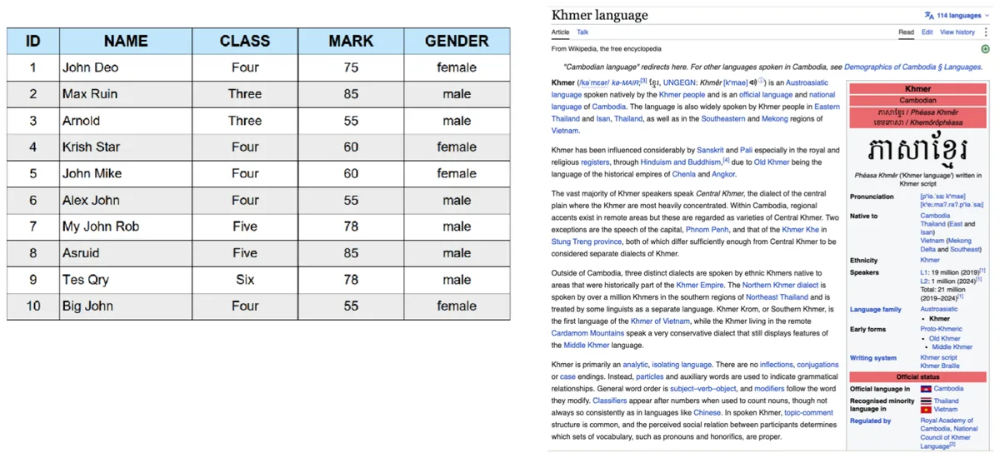
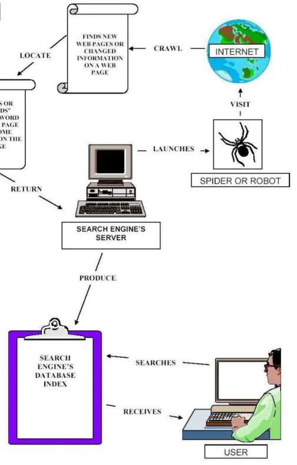
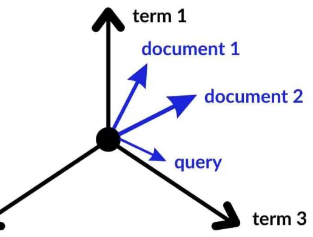
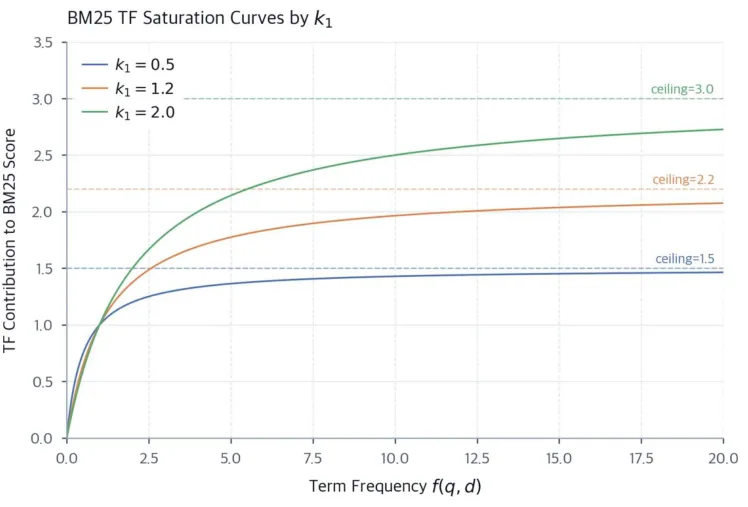

From Substring to NDCG
Hi. Let's build a search engine together, one honest mistake at a time. We start with the dumbest thing that could work (look for the query text inside every document), watch it fail, and fix each failure with a real IR idea. By the end you'll be ranking documents with BM25 and proving, with numbers, which ranker is better.
One collection, all the way through. Every example and every live demo on this page uses the same 30 short documents (d01…d30) from the labs: guesthouses in Phnom Penh, a ball python, Java the island, an automobile engine, and so on. Some are planted on purpose to trip up naive search. Numbers quoted from the labs are the ones your notebooks printed.
- Chapter 1 asks what IR is and why a database
LIKEquery is not a search engine. (Lesson 1, Lab 1) - Chapter 2 cleans text into tokens and builds an inverted index so we stop reading every document. (Lesson 2, Lab 2)
- Chapter 3 turns a set of matches into a ranked list with TF-IDF and BM25. (Lesson 3, Lab 3)
- Chapter 4 measures whether a ranking is any good: P@k, AP, MAP and NDCG. (Lesson 4, Lab 4)
What Is Information Retrieval?
1.1 The definition
Start with a small experiment from the first lecture: type the same query, say coffee near me, into two different search services and compare the top three results. They won't match. Both engines read the same web, yet they disagree on what's "best". That disagreement is what this course is about.
Information retrieval (IR) is finding material (usually documents) of an unstructured nature (text, images, audio) that satisfies an information need, from large collections.
Each of the three bold words carries weight:
- Unstructured. A sentence has no columns. "Budget guesthouses in Phnom Penh offer clean rooms" doesn't have a
pricefield you can sort by. - Information need. The thing in the person's head. It is not the same as the words they type.
- Large collections. Millions or billions of documents, so anything that reads every one per query is too slow.

Search is everywhere: the web, email, your phone, online shops, code search, legal and medical papers, company files. Even chatbots that "read your documents" begin with a retrieval step. That pattern is called RAG (retrieval-augmented generation), and we'll build up to it in Sessions 9–10.
1.2 Core vocabulary
The lecture gives one chain of words you should be able to say in your sleep:
| Term | Meaning | In our lab collection |
|---|---|---|
| Document | One unit you can return | d12: "Buses run every hour from Phnom Penh to Siem Reap…" |
| Collection / corpus | All the documents you search | The 30 documents |
| Information need | What the person actually wants | N3: "Travel from Phnom Penh to Siem Reap" |
| Query | The words they type to express it | travel Phnom Penh Siem Reap |
| Relevance | Does a document satisfy the need? | d12 yes; d29 (a museum in Phnom Penh) no |
Asking a librarian. Your need is "I have to get to Siem Reap tonight." What you actually say is "bus Siem Reap?" A good librarian answers the need, not just the words. They might hand you a ferry timetable even though you never said "ferry".
1.3 Relevance
Relevance sounds obvious, but it shifts. It depends on the user, the task, the context and even the time (yesterday's bus timetable is useless today).
- Topical relevance means "it's about the right subject". Usefulness means "it actually helps me". A Wikipedia page about Siem Reap is topical; a page listing tonight's buses is useful.
- Judgments can be binary (relevant or not) or graded (how relevant, e.g. 0–3). We'll need graded ones in Chapter 4.
- Judgments are made by people. A computer can't decide relevance for us; that's the whole problem.
1.4 Why is it hard?
The biggest single enemy has a name: vocabulary mismatch. People use different words for the same thing, and the same word for different things.
| Problem | Example | Seen in our collection |
|---|---|---|
| Synonyms (different words, same meaning) | car / automobile / vehicle; cheap / budget / affordable | Query car: no document says "car". d14 says "vehicles", d15 says "automobile". |
| Ambiguity (same word, different meanings) | Java, Python, Apple | d04 Python the language vs d05 a ball python (a snake). d06 Java the language vs d07 Java the island. |
| Short queries, long documents | 2 words vs 2,000 words | Our docs are short (~9.5 tokens), so this hits us in Chapter 3. |
| Mixed languages / scripts | Khmer has no spaces between words | d26 says exactly this; Lab 1 Part 7 shows it breaking search. |
1.5 IR vs database queries
You already know SQL, so it's tempting to think SELECT … WHERE text LIKE '%cat%' is a search engine. Here's the lecture's comparison:
| IR | Database query | |
|---|---|---|
| Data | Unstructured text | Structured records |
| Query | Keywords or a question | SQL |
| Matching | Partial and approximate | Exact |
| Result | A ranked list | A set of rows |
| Success | Degrees of relevance | Right or wrong |
IR shows up in web search, recommender systems, question answering and RAG.
1.6 Anatomy of a search system
Every search engine splits its work into two halves:
Offline (done once, ahead of time)
- Collect documents: crawl, feeds, files.
- Preprocess: clean, tokenize, normalize.
- Index: build a structure that makes lookup fast.
Why offline? You pay the cost once and then answer many queries quickly.
Online (every single query)
- Interpret the query.
- Match it against the index.
- Score and rank.
- Present results with snippets.
Users expect this in a fraction of a second.

A third piece closes the loop: feedback from logs, clicks and evaluation tells you what to improve. The course follows this pipeline: Session 2 builds the index, Session 3 the ranking, Session 4 the evaluation, Sessions 5–6 data collection, Session 8 links, Sessions 9–10 neural search and RAG.
That split into offline and online exists because people won't wait. In 2009 Google slowed its results on purpose by 100 to 400 milliseconds, far too little to notice consciously, and people searched 0.2% to 0.6% less. You can't scan documents in that time budget, so the slow work has to be done ahead of time.
1.7 A first look at precision and recall
How do we know a search engine works? The lecture's example: the collection holds 20 relevant documents. Your system returns 10 results, and 6 of them are relevant.
Precision is about the quality of what you returned. Recall is about what you missed.
Fishing with a net. Precision is "how much of my catch is actually fish, not boots?" Recall is "how many of the fish in the lake did I catch?" A tiny net gets high precision and low recall. A giant net gets the opposite.
1.8 As demonstrated in Lab 1: three naive searches
Lab 1 builds the simplest search engines possible and measures where they break. There are three versions.
Lab 1 · Part 2: substring scan
Check whether the query text appears anywhere inside each document.
for id, text in docs.items():
if query.lower() in text.lower():
ids.append(id)
Query: 'cat' -> 4 result(s) d06 … enterprise applications … d16 Her cat sleeps all day … d17 … catalog … category … d18 … concatenate two strings …
Only d16 is about a cat. The others contain the letters c-a-t. Substring matching has no idea what a word is.
This exact bug has a famous victim. In 1996 AOL stopped residents of Scunthorpe, a town in England, from creating accounts, because their town's name contains a rude word as a substring. It's now called the Scunthorpe problem, and filters still trip over it. Your cat inside category is the same mistake.
Lab 1 · Parts 3–4: whole words, then SQL LIKE
Part 3 splits text into words with re.findall(r"\w+", text.lower()) and matches whole words. cat now returns only d16. But travel Phnom Penh Siem Reap gives 0 results with AND (no document says "travel") and 4 with OR, listed in id order with no hint which is best.
Part 4 loads the same docs into SQLite and runs WHERE text LIKE '%cat%'. The lab checks it against the substring scan for five queries: identical every time. A LIKE query is a substring scan, with the same false matches.
Try all three yourself. Press Run and watch the scan read every single document, one after another, to answer one query. Matches are highlighted so you can see why each document came back. Documents tagged rel are the ones Lab 1 judged relevant to the information need.
Watch a naive search scan all 30 documents
What the evaluation table showed
Lab 1 Part 5 judged six information needs by hand and computed precision and recall for every method. Three rows tell the whole story:
| Need · query | Method | Precision | Recall | What went wrong |
|---|---|---|---|---|
N5 · cat | substring | 0.25 | 1.00 | Found the cat, plus three "cat-inside-a-word" accidents |
N4 · car | every method | n/a | 0.00 | Vocabulary mismatch: relevant docs say "automobile" and "vehicles" |
N1 · cheap hotel | every method | 1.00 | 0.33 | Missed d01 "budget guesthouses" and d30 "affordable accommodation" |
Lab 1 · Part 6: does it scale?
The lab timed one scan for "rice" over bigger and bigger synthetic collections:
1,000 docs: scan 0.2 ms 100,000 docs: scan 14.3 ms 10,000 docs: scan 1.7 ms 500,000 docs: scan 74.9 ms
Ten times more documents means about ten times more time. That's linear growth, written \(O(N)\). Scaled up to a billion web pages: \(0.0749\,\text{s} \times \frac{10^9}{500{,}000} \approx 150\) seconds, 2.5 minutes for one query. Users expect a fraction of a second.
Lab 1 · Part 7: Khmer text
Khmer is written without spaces. Splitting ភ្នំពេញជារាជធានីនៃប្រទេសកម្ពុជា on spaces gives one giant "word", so whole-word search finds nothing. After running a segmenter (khmernltk.word_tokenize) you get ['ភ្នំពេញ', 'ជា', 'រាជធានី', 'នៃ', 'ប្រទេស', 'កម្ពុជា'] and whole-word search works again. Tokenization is a language-specific decision, which is the opening topic of Chapter 2.
A database LIKE query is a substring scan. It matches letters, not words (cat ⊂ category). It can't bridge synonyms (car vs automobile). It returns an unordered set. And it reads every document per query, so its cost grows linearly. Chapter 2 fixes the first and last problems, Chapter 3 fixes ordering, and synonyms wait for later sessions.
Check yourself: Chapter 1
Preprocessing, the Inverted Index and Boolean Retrieval
2.1 Today's pipeline
The second lecture is one assembly line. Each arrow is one part of Lab 2:
One rule matters more than any single step: the query goes through exactly the same pipeline as the documents. If documents are stemmed and the query isn't, "running" will never meet "run".
2.2 Tokenization
Tokenization splits raw text into tokens: usually words, usually lowercased.
"Cheap hotel deals"→["cheap", "hotel", "deals"]- Khmer needs a real segmenter:
"និស្សិតសាលាស៊ីអេឌីធី"→['និស្សិត', 'សាលា', 'ស៊ី', 'អេឌីធី']. Tools: NLTK for English;khmer-nltkorkhmer-segmenterfor Khmer.
Tokenization looks mechanical, but it forces decisions:
| Decision | If you keep it | If you drop it |
|---|---|---|
| Numbers? | "2 bedrooms" stays searchable | The 2 in d20 vanishes (Lab 2's tokenizer does this) |
| Split hyphens? | "tuk-tuk" stays one token | "hand-written" becomes "hand" + "written" |
| Keep case? | "Apple" (company) ≠ "apple" (fruit) | "Python" and "python" merge, which helped in Lab 2 |
Every tokenization choice trades recall against precision. Merging more forms together finds more (recall up) but also confuses more (precision down).
2.3 Stop words
Stop words are very frequent words that carry little meaning on their own: the, is, of, and, to. Removing them shrinks the index and speeds up ranking. In Lab 2 Part 2, removing a 45-word stop list cut the collection from 405 tokens to 284, about 30% smaller.
The lecture walks one sentence through it:
Look what happened: "I do not like apple" became [like, apple]. The meaning flipped. Stop-word removal also hurts on:
- Phrase queries: "to be or not to be" becomes nearly empty.
- Names and titles: "The Who" (a band), "Vitamin A".
- Direction: "flights to Phnom Penh" and "flights from Phnom Penh" turn into the same query.
For Khmer there's a community stop-word dictionary (KSWv2) in the lecture notes.
2.4 Stemming and lemmatization
Both are forms of normalization: making different forms of a word look the same so they match.
Stemming cuts words
Rule-based suffix chopping. Fast, no dictionary, and the result isn't always a real word.
Lemmatization understands words
Uses a dictionary and grammar to find the base form (the lemma). Slower, but handles irregular words.
The stemming trade-off
- Over-stemming: unrelated words collapse together. university and universe both become
univers. - Under-stemming: related words stay apart. ran and running never meet, because "ran" has no suffix to cut.
Lab 2 · Part 3: the Porter stemmer
from nltk.stem import PorterStemmer
porter = PorterStemmer()
porter.stem("running") # 'run'
running -> run farms -> farm categories -> categori
ran -> ran farming -> farm category -> categori
runners -> runner farmers -> farmer cats -> cat
Both effects show up at once. categori isn't a word, but that's fine as long as it's consistent. ran stays alone (under-stemming) because only a lemmatizer knows it's the past tense of "run".
Note: Labs 3 and 4 swap Porter for a 15-rule suffix stemmer to keep things transparent. That one turns running into runn, which is why "running" can't find d12's "run" in those labs. The live demos on this page use the Lab 3/4 stemmer.
2.5 Try the pipeline
Type any sentence or load a document, then press Run. The pipeline goes one stage at a time: it checks every token against the stop list (stop words are highlighted, and the matching word lights up in the list below), then shows which suffix rule the stemmer cuts from each word.
Text → tokens → terms, step by step
2.6 The inverted index
Here's the idea that makes search engines fast. Instead of storing "document → words", flip it around and store "word → documents".
An inverted index is a dictionary: term → sorted list of the ids of documents that contain it. That list is called a postings list.
Building it is simple and paid once: for every document, preprocess it, add the document id to the postings list of each unique term, then sort every list.
- A common term (e.g. "language") has a long list.
- A rare term (e.g. "pagerank") has a short, informative list. If a document contains it, that tells you a lot. Hold that thought; it becomes IDF in Chapter 3.
The index at the back of a textbook. You don't read the whole book to find "photosynthesis"; you look it up and get "pages 12, 47, 103". Those page numbers are a postings list, and they're sorted.
Lab 1 worked out that scanning a billion pages would take 2.5 minutes per query. Google says its index is well over 100,000,000 gigabytes, and it answers in a fraction of a second. It can do that because a query only touches the postings lists of its own words. The inverted index isn't an optimisation here. It's the reason web search is possible at all.
Lab 2 · Part 4: build_index
def build_index(docs):
index = {}
for doc_id, text in docs.items():
for term in set(preprocess(text)): # set(): one entry per doc
index.setdefault(term, []).append(doc_id)
for term in index:
index[term].sort() # sorted lists are the key
return index
Vocabulary size: 229 terms (from 405 raw tokens) 'python' -> ['d04', 'd05', 'd18'] 'car' -> [] 'cat' -> ['d16'] 'automobile' (stem 'automobil') -> ['d15']
cat → only d16. The category/catalog problem is gone, fixed by tokenization: "category" is its own token and never equals "cat". But car is still empty. The index can only find words that are literally there.
Watch the index being built
Press Run. Each step takes one term from the current document and appends the document id to that term's postings list. The table tracks twelve terms; everything else is counted in the totals. Notice cambodia and cambodian end up as different terms.
2.7 Boolean retrieval and the merge algorithm
Boolean retrieval combines postings lists with AND, OR and NOT into one answer set:
- A AND B: documents containing both terms (intersection).
- A OR B: documents containing either (union).
- NOT A: every document without A (complement).
Because the lists are sorted, we can intersect two of them in a single left-to-right pass, like zipping two sorted decks of cards. Keep one finger on each list. If the ids match, keep it and move both fingers. Otherwise move the finger on the smaller id. That costs \(O(|p_1| + |p_2|)\), and it never touches document text.
Lab 2 · Part 5: intersect
def intersect(p1, p2):
answer, i, j = [], 0, 0
while i < len(p1) and j < len(p2):
if p1[i] == p2[j]: answer.append(p1[i]); i += 1; j += 1
elif p1[i] < p2[j]: i += 1
else: j += 1
return answer
boolean_and also sorts the lists by length first, so it starts with the shortest. The running answer can never be longer than the shortest list, so every later merge stays small.
Step through a merge
2.8 As demonstrated in Lab 2: is the index worth it?
An index costs time to build. Lab 2 Part 7 measured whether that pays off at 500,000 documents for python AND language:
| Approach | Cost |
|---|---|
| Naive scan, per query | 53.7 ms |
| Build the index, once | 51,553 ms (about 52 s) |
| Merge postings, per query | 6.7 ms |
When does building once beat scanning every time? Set the totals equal for \(q\) queries:
After about eleven hundred queries the index has paid for itself. After that, every query is roughly 8× cheaper. A real engine answers millions of queries a day, so it's an easy win. A collection you search only once, or one that changes constantly, might not be worth indexing.
Lab 2 also re-ran Lab 1's six needs through the index. Lowercasing fixed N2 (Python with a capital P now matches), tokenization fixed N5 (cat), and budget accommodation OR found d01 and d30. Two needs are still broken:
- N4
car: recall 0. This is a vocabulary problem. - N3
travel Phnom Penh Siem Reap: AND gives nothing, OR gives 4 unordered docs with precision 0.25. This is a ranking problem, and Chapter 3 fixes it.
Chapter 2 recap
- Tokenize, remove stop words, stem. Each step is a trade-off between recall and precision.
- Queries must go through the same pipeline as documents.
- An inverted index stores term → sorted postings list.
- Boolean queries are answered by merging postings, not scanning text.
- Index build is paid once; Lab 2's break-even was ~1,098 queries.
- Still broken: synonyms (
car) and ordering (Boolean gives a set).
Check yourself: Chapter 2
Ranking with TF-IDF, Cosine and BM25
3.1 Why ranking matters
Recall where Lab 2 left us. Boolean OR for travel Phnom Penh Siem Reap returned d01, d02, d12, d29, and only d12 is really about that trip. An unordered set can't tell you which one to read first.
- Scale: real collections return thousands or millions of Boolean matches.
- Behaviour: people rarely look past the first few results.
- So the core IR problem is: order documents by estimated relevance to the information need.
Ranked retrieval is simple to describe: score every document, sort by score, return the top k. No more hard yes/no matching; every document gets a real-valued score. The rest of this chapter is about how to compute that score.
How much does order matter? A 2019 Backlinko study of 5 million Google searches found the first organic result took about 32% of clicks, and fewer than 1% of searchers clicked anything on page two. A relevant document at rank 50 might as well not exist. That's why the rest of this chapter is about ordering.
3.2 TF, DF and IDF
Term frequency
\(tf(t,d)\) is how many times term \(t\) appears in document \(d\). Intuition: if doc A says "python" once and doc B says it 8 times, B is probably more about Python.
The problem with raw TF
Some words are everywhere: stop words, or generic words like "offer" and "system". A high count of a word that's in every document isn't special. We need to scale each term by how rare it is across the collection.
Document frequency and inverse document frequency
\(df(t)\) is the number of documents that contain \(t\) at least once (not the total count). Then:
IDF is "log of N over df". Rare term, small df, big IDF. Common term, big df, small IDF. A term that's in every document gets \(\log 1 = 0\): it can't help you tell documents apart.
A high TF-IDF weight needs both: the term is frequent in this document and rare across the collection.
Lab 3 · Parts 1–2: df and idf on our 30 docs
def idf(term):
d = df(term)
return 0.0 if d == 0 else math.log(N / d) # natural log, N = 30
| Term | df | idf = ln(30/df) |
|---|---|---|
hotel, cheap | 1 | 3.401 |
cambodia, offer, siem | 2 | 2.708 |
python, phnom | 3 | 2.303 |
cambodia and offer get the same IDF because they have the same df. IDF only measures rarity. It has no idea that "cambodia" is a topic word and "offer" is a generic verb.
3.3 Documents as vectors, compared by cosine
In the vector space model, every unique term in the collection is one dimension. A document's vector holds its TF-IDF weight in each dimension (0 if the term is absent). A query is treated as a very short document and gets a vector the same way.

To compare a query with a document, measure the angle between their vectors, not their lengths:
Dot product on top, the two lengths underneath. 1.0 means same direction (very similar). 0.0 means they share no terms.
Two people pointing. You don't care how long their arms are, only whether they point the same way. Dividing by the lengths removes "arm length", which is roughly how long and wordy a document is.
Lab 3 · Part 3: the ranked list Boolean couldn't give
'travel Phnom Penh Siem Reap' -> d12: 0.440 Buses run every hour from Phnom Penh to Siem Reap… d02: 0.280 Cheap hotel deals in Siem Reap… d29: 0.226 The National Museum in Phnom Penh… d01: 0.198 Budget guesthouses in Phnom Penh…
Same four documents as Boolean OR, but now d12 is on top. It shares four query terms (phnom, penh, siem, reap); the others share two. "travel" appears in no document, so its IDF is 0 and it adds nothing.
3.4 BM25: saturation and length normalization
TF-IDF grows linearly with term frequency: 10 mentions count 10× as much as 1. In practice, repetition matters less and less after the first few mentions. Otherwise a spam page that repeats a keyword 100 times would win. BM25 fixes two things.
Fix 1: term saturation (parameter \(k_1\))
The score still grows with tf, but levels off. With length ignored, a term contributes
\(k_1\) (typically 1.2–2.0) controls how fast it saturates. Higher \(k_1\) means slower saturation, so repetition keeps counting for longer.

Linear TF vs BM25 saturation
Fix 2: length normalization (parameter \(b\))
A match in a short document is stronger evidence than the same match in a long one. BM25 compares the document's length \(|d|\) to the collection average \(avgdl\). \(b = 0\) turns this off; \(b = 1\) normalizes fully; the default is 0.75.
The full formula
For each query term: a rarity weight, times a saturating tf. The bracket under \(k_1\) grows for long documents (dragging the score down) and shrinks for short ones. The "+1" inside the log keeps the IDF positive even for a term in every document.
Lab 3 · Part 4: saturation and bm25_score
p1: raw tf = 1 | BM25 saturation = 1.00 p2: raw tf = 4 | BM25 saturation = 1.82 p3: raw tf = 10 | BM25 saturation = 2.17 (ceiling k1+1 = 2.5)
score += idf_bm25(term) * (f * (k1 + 1)) / (f + k1 * (1 - b + b * doc_len[doc_id] / AVGDL))
Ten times the mentions gives about twice the score, not ten times. Keyword stuffing stops paying off.
Early web search leaned heavily on how often a word appeared, so spammers filled pages with hidden repeated keywords. Saturation takes away most of that reward. BM25 itself came from research at City University London in the 1990s, and it's held up well enough that Elasticsearch made it the default ranker in version 5.0. So the formula above isn't only for the exam: you'll likely meet it at work.
3.5 Try both rankers
This runs the exact Lab 3 pipeline in your browser: the same tokenizer, stop list, suffix stemmer, TF-IDF cosine and BM25. With the defaults (\(k_1=1.5, b=0.75\)) you'll get the notebook's numbers.
Boolean OR vs TF-IDF vs BM25
| # | Boolean OR (id order) | TF-IDF cosine | BM25 |
|---|
Click any document id in the table to see exactly how its score was computed.
Score every document, then sort
Ranked retrieval in slow motion, using the query and k1/b from the box above. The ranker visits d01 to d30, gives each one a score, and then sorts. Documents that share no term with the query get 0 and drop to the bottom.
3.6 The "python" disagreement
Here's the puzzle Lab 3 Part 5 ends on. For the one-word query python, the two models disagree on who's first:
| Doc | Length |d| | tf(python) | TF-IDF cosine | BM25 |
|---|---|---|---|---|
d04 Python is a popular programming language… | 9 | 1 | 0.285 (1st) | 2.231 (3rd) |
d18 To concatenate two strings in Python… | 7 | 1 | 0.274 (2nd) | 2.471 (1st) |
d05 A ball python is a small, docile snake… | 8 | 1 | 0.248 (3rd) | 2.345 (2nd) |
All three mention "python" exactly once, so tf can't separate them. Each model falls back on something else:
- BM25 uses length. Shorter than average (9.5) means a stronger match, so
d18(7) >d05(8) >d04(9). Set \(b = 0\) and all three tie at 2.181. Try it with the sliders above. - Cosine divides by the document's vector length, and that comes from the IDF weights of its other words.
d04contains fairly common words (data, science, language), so its vector is shorter and "python" takes up a bigger share of it.
BM25 puts the snake (d05) above the programming intro (d04). Neither model knows what "python" means. That's ambiguity, and no amount of tf and length tuning fixes it. Which ranking is actually better? We can't say by looking. Chapter 4 answers it with numbers.
3.7 Zipf's law and the limits
Zipf's law: in any language, a few terms are extremely frequent and most are rare. Rank the words by frequency, and the frequency falls roughly as 1/rank. That long tail of rare words is why IDF works at all: most terms are rare enough to be informative. Very short documents and queries, like ours, make length normalization (\(b\)) especially important.
TF-IDF and BM25 can only score documents that share terms with the query. car still returns nothing (Lab 3 Answer 5.3), and with the suffix stemmer running (→ runn) misses d19's "runners ran". Fixing that needs query expansion or neural/semantic search, coming in Sessions 9–10.
Chapter 3 recap
- TF-IDF = tf × idf; IDF = log(N/df) rewards rare terms.
- Documents and queries are vectors; compare by cosine (angle).
- BM25 saturates tf (\(k_1\)) and normalizes for length (\(b\)).
- Both beat Boolean retrieval by producing a ranked list.
- On "python", TF-IDF says
d04first, BM25 saysd18. - Neither model fixes vocabulary mismatch or ambiguity.
Check yourself: Chapter 3
Evaluating Search
4.1 Why we need evaluation
Lab 3 left a disagreement: TF-IDF ranked d04 first for "python", BM25 ranked d18 first. We compared two lists by eye, which isn't evidence. Every design choice (stemming rules, \(k_1\), \(b\), stop list) needs a way to compare before and after. Without measurement, tuning is guessing.
4.2 Test collections and relevance judgments
A test collection has three parts:
- Documents: our 30.
- Queries: the six needs N1–N6.
- Relevance judgments (qrels): which docs satisfy each need, decided by a human.
For "python": d04 relevant (a useful Python introduction), d18 relevant (a brief code snippet), d05 not relevant (a snake).
Binary vs graded
Binary says yes or no. Graded says how relevant, for example on a 0–3 scale. Graded judgments let you reward putting the best document first, not just any relevant one.
| Grade | Meaning | Example for "python" |
|---|---|---|
| 0 | Not relevant | d05 (snake) |
| 1 | Somewhat relevant | d18 in the lecture (Lab 4 gives it 2) |
| 2 | Useful | n/a |
| 3 | Highly relevant | d04 (an actual introduction) |
Where judgments come from: in small projects, your own team or a few volunteers. In large campaigns like TREC, trained annotators follow detailed guidelines. Either way, judgments are data, and data has noise.
4.3 Precision, recall and F1
TP = relevant and returned. FP = returned but not relevant. FN = relevant but missed. F1 is the harmonic mean: it punishes a system that's great at only one of the two.
Why harmonic and not a plain average? A system that returns all 30 documents has recall 1.0 and precision maybe 0.07. The plain average is 0.53, which looks okay. F1 is 0.13, which is honest.
4.4 Cutoffs: P@k and R@k
Users look at the top of the list, so we evaluate only the first \(k\) results. \(k\) stands for "how far a user is likely to look".
Lecture example: ranking d04 ✓, d18 ✓, d15 ✗, with relevant set {d04, d18}.
| Cutoff | Relevant found | P@k | R@k |
|---|---|---|---|
| k = 1 | 1 | 1.00 | 0.50 |
| k = 2 | 2 | 1.00 | 1.00 |
| k = 3 | 2 | 0.67 | 1.00 |
At \(k=3\): \(F_1@3 = 2\cdot\frac{0.67\times1.00}{0.67+1.00} = 0.80\). Changing \(k\) changes the score, so which \(k\) matches real behaviour? And a single cutoff hides where the relevant documents sit. P@1 rewards a system that finds just one good result; P@10 counts results many people never see.
Lab 4 · Part 2: precision_at_k
def precision_at_k(ranked_ids, relevant, k):
hits = sum(1 for d in ranked_ids[:k] if d in relevant)
return hits / k # divide by k, even if fewer than k results
That last comment matters. For N5 cat, both models return only d16. That's perfect, yet P@3 = 1/3 = 0.33 because the formula divides by 3. A short list is penalized at P@k. R@3 = 1.00 tells the real story.
4.5 Average Precision and MAP
Average Precision avoids picking a single \(k\). Walk down the ranking. Every time you hit a relevant document, write down the precision at that rank. Then average those numbers over all relevant documents (missed ones count as 0).
\(rel(k)\) is 1 if the document at rank \(k\) is relevant, 0 otherwise. \(R\) is the total number of relevant documents. MAP is the mean AP over all queries: one number for a whole system.
Lecture example: ranks d04 ✓, d18 ✗, d05 ✓ with 2 relevant documents.
Relevant documents at early ranks push AP up. Lab 4 makes this concrete. For "python" (relevant = {d04, d18}):
- TF-IDF:
d04✓,d18✓,d05→ AP = (1/1 + 2/2)/2 = 1.000 - BM25:
d18✓,d05✗,d04✓ → AP = (1/1 + 2/3)/2 = 0.833
Ranking A: d04 (very relevant), d18 (somewhat). Ranking B: d18, then d04. With binary judgments both have AP = 1.00. AP can't reward putting the better document first.
4.6 Graded relevance and NDCG
NDCG (Normalized Discounted Cumulative Gain) combines three ideas:
- Graded gain: a highly relevant doc earns more credit, \(2^{r}-1\).
- Rank discount: the same doc earns less lower down, divided by \(\log_2(i+1)\).
- Normalize against the ideal ranking, so the score sits between 0 and 1.
Step 1: grade → gain
| Grade r | Gain 2ʳ−1 |
|---|---|
| 0 | 0 |
| 1 | 1 |
| 2 | 3 |
| 3 | 7 |
Going from grade 2 to 3 more than doubles the gain (3 → 7). The best documents count a lot more.
Step 2: apply the discount
| Rank | Doc | Gain | log₂(i+1) | Contrib. |
|---|---|---|---|---|
| 1 | d18 | 1 | 1.00 | 1.00 |
| 2 | d04 | 7 | 1.58 | 4.43 |
| 3 | d05 | 0 | 2.00 | 0.00 |
DCG@3 = 1.00 + 4.43 + 0 = 5.43
Step 3: normalize. The ideal order is d04 (3), d18 (1), d05 (0): \(IDCG@3 = \frac71 + \frac1{1.58} + 0 = 7.63\). So \(NDCG@3 = 5.43 / 7.63 = 0.71\).
| Metric | A: d04 → d18 → d05 | B: d18 → d04 → d05 |
|---|---|---|
| Relevant at ranks | 1, 2 | 1, 2 |
| AP (binary) | 1.00 | 1.00 |
| DCG@3 | 7.63 | 5.43 |
| NDCG@3 | 1.00 | 0.71 |
A puts the best document first. Only the graded metric notices.
4.7 Metrics bench
Reorder the ranking and change grades to see every metric update. The working is printed underneath, so you can check your hand calculations against it. "Relevant" for P, R and AP means grade ≥ 1.
P@k · R@k · F1 · AP · NDCG
Press Run to walk down the ranking the way AP and DCG do: one rank at a time, adding up precision at each relevant hit and each document's discounted gain.
Outlined bar = gain 2r−1 (max 7). Filled bar = what's left after dividing by log₂(rank+1).
4.8 As demonstrated in Lab 4: TF-IDF or BM25?
Lab 4 runs both rankers over N1–N6 with Lab 4's judgments (binary for AP, graded 0–3 for NDCG). These are the results once the TODO functions are filled in (see the explained notebook):
| Need · query | AP TF-IDF | AP BM25 | NDCG TF-IDF | NDCG BM25 |
|---|---|---|---|---|
| N1 · cheap hotel | 0.333 | 0.333 | 0.674 | 0.674 |
| N2 · python | 1.000 | 0.833 | 1.000 | 0.731 |
| N3 · travel Phnom Penh Siem Reap | 1.000 | 1.000 | 1.000 | 1.000 |
| N4 · car | 0.000 | 0.000 | 0.000 | 0.000 |
| N5 · cat | 1.000 | 1.000 | 1.000 | 1.000 |
| N6 · running | 0.500 | 0.500 | 0.337 | 0.337 |
| Mean (MAP / avg NDCG) | 0.639 | 0.611 | 0.668 | 0.624 |
- Both metrics prefer TF-IDF, and only N2 decides it. The other five queries tie exactly.
- The gap is bigger under NDCG (0.045 vs 0.028), because NDCG also punishes BM25 for putting the grade-2
d18above the grade-3d04. AP only sees "a non-relevant doc at rank 2". - N4 is 0 for both. Evaluation can't fix vocabulary mismatch, but it makes the failure visible as a number.
When metrics disagree: sweeping b
Lab 4 Part 5 varies BM25's \(b\) on "python":
| b | Ranking | AP | NDCG |
|---|---|---|---|
| 0 | d04, d05, d18 (a three-way tie at 2.181, left in id order) | 0.833 | 0.956 |
| 0.75 | d18, d05, d04 | 0.833 | 0.731 |
| 1.0 | d18, d05, d04 | 0.833 | 0.731 |
AP doesn't move: either way, one relevant doc sits at rank 1 and the other at rank 3. NDCG jumps when d04 (grade 3) reaches the top. Be careful with the \(b=0\) row, though. That win comes from a tie broken by document id, not from BM25 knowing anything. Ties are a real trap in evaluation.
The new need "studying or courses in Cambodia" with candidates d03 (CADT degrees), d20 (apartments near the university), d25 (coffee shops where students study), d28 (learning to program). Most people give d03 a 3, but partners split on d25 and d28: is "students study in cafés" about studying? Is "learning to program" about courses, and in Cambodia? That disagreement is the lesson.
4.9 Choosing a metric, and trusting it
| Retrieval goal | Useful metric |
|---|---|
| Show a few good results immediately | P@k, NDCG@k |
| Find as many relevant items as possible (e.g. legal or medical search) | Recall, R@k with a suitable k |
| Compare binary-judged systems across many queries | MAP |
| Reward highly relevant results near the top ("show me the official page") | NDCG |
Two people can disagree about a borderline document. That changes the qrels, and so it changes MAP and NDCG. Use clear guidelines, example cases and repeated judgments, and discuss disagreements before claiming a tiny score difference means anything. Lab 4's whole TF-IDF vs BM25 gap rests on one query and two documents. One annotator grading d18 a 3 instead of a 2 would shrink it.
Here's a case where recall has legal weight. In US lawsuits, each side may have to hand over every relevant document from millions of emails. Since a 2012 court decision (Da Silva Moore), judges have accepted ranking software for this job, and lawyers argue over the measured recall. Nobody there cares about NDCG@3, because the result nobody reads is exactly the one that could lose the case.
Chapter 4 recap
- Test collection = documents + queries + human relevance judgments.
- P@k, R@k and F1@k measure success at a cutoff.
- AP rewards early relevant hits; MAP averages AP over queries.
- NDCG uses graded relevance and discounts lower ranks.
- On Lab 4's collection: MAP 0.639 vs 0.611, NDCG 0.668 vs 0.624, both for TF-IDF.
- Pick the metric for the task, and check how trustworthy the qrels are.
Check yourself: Chapter 4
Formula Sheet and Glossary
| Name | Formula | Lesson · Lab |
|---|---|---|
| Precision / Recall | \(P=\frac{TP}{TP+FP},\ R=\frac{TP}{TP+FN}\) | L1 s.17, L4 s.8 · Lab 1 P5 |
| F1 | \(F_1=\frac{2PR}{P+R}\) | L4 s.8 · Lab 4 P2 |
| IDF | \(idf(t)=\log\frac{N}{df(t)}\) | L3 s.7 · Lab 3 P2 |
| TF-IDF | \(w(t,d)=tf(t,d)\cdot idf(t)\) | L3 s.8 · Lab 3 P2 |
| Cosine | \(\cos(\vec q,\vec d)=\frac{\vec q\cdot\vec d}{\lVert\vec q\rVert\lVert\vec d\rVert}\) | L3 s.10 · Lab 3 P3 |
| BM25 IDF | \(\log\left(\frac{N-df+0.5}{df+0.5}+1\right)\) | L3 s.16 · Lab 3 P4 |
| BM25 | \(\sum_t idf\cdot\frac{tf(k_1+1)}{tf+k_1(1-b+b|d|/avgdl)}\) | L3 s.15 · Lab 3 P4 |
| P@k / R@k | \(\frac{\#rel@k}{k},\ \frac{\#rel@k}{\#rel}\) | L4 s.9 · Lab 4 P2 |
| AP / MAP | \(\frac1R\sum_k P@k\cdot rel(k)\); mean over queries | L4 s.14–16 · Lab 4 P3 |
| DCG / NDCG | \(\sum_i\frac{2^{r_i}-1}{\log_2(i+1)}\); DCG / IDCG | L4 s.19–23 · Lab 4 P4 |
| Break-even queries | \(q=\frac{\text{build}}{\text{scan}-\text{merge}}\) | Lab 2 P7 |
| Term | Meaning |
|---|---|
| Information need | What the person actually wants; the query is only an attempt to express it. |
| Token / term | A token is a word as cut from the text; a term is the normalized form stored in the index. |
| Stop word | A very common word removed before indexing (the, of, to). |
| Stemming / lemmatization | Chopping suffixes by rule / mapping to a dictionary base form. |
| Postings list | Sorted list of document ids containing a term. |
| Inverted index | Dictionary from term to postings list. |
| Vocabulary mismatch | Query and relevant document use different words for the same thing (car / automobile). |
| Saturation | Extra repetitions of a term add less and less score (BM25's \(k_1\)). |
| Length normalization | Discounting matches in long documents (BM25's \(b\)). |
| Qrels | Query relevance judgments: the human answer key of a test collection. |
| TREC | NIST's long-running evaluation campaign that builds large test collections. |
Course materials
The original files this page was built from. Tap one to download it.
Lecture decks
- Lesson 1 · Introduction to information and web retrieval PDF · 570 KB
- Lesson 2 · Text preprocessing, inverted index and Boolean retrieval PDF · 242 KB
- Lesson 3 · Document representation and ranking PDF · 341 KB
- Lesson 4 · Evaluation PDF · 340 KB
Built from the four Session 1–4 lecture decks (Mr. Natt Korat, CADT) and Labs 1–4. Figures are cropped from those decks. Facts in the "Real world" boxes are from general knowledge, not the slides, so check them before quoting them in an assignment. Each lab has a line-by-line companion notebook in Lab/explained/ that links back to the slides cited here.